<!----------------------------------------------------------------
------------------------ Research Section -----------------------
----------------------------------------------------------------->
<section id="research" class="research">
  <div class="container">

    <div class="section-title">
      <h2></h2>
      <p>MQ Drone Lab- ACM MobiSys DroNet 2024, IEEE ICARM</p>
    </div>

<hr>            
<h4> MQ Drone Lab at the 2024 ACM Mobisys Conference and DroNet Workshop in Tokyo,and IEEE ICARM</h4>
<hr>


<div class="whole-wrap">
        <div class="container">
          <div class="section-top-border">
            <!-- <div class="research-item pb-0"> -->
              <div class="row">
                

<ol>
  <p>
    We at the MQ Drone Lab  <a href="https://www.mqdronelab.com/" target="_blank" rel="noopener">(website)</a> attended the MobiSys 2024 in Tokyo, Japan. We also presented our work at IEEE ICARM. We had a paper presented at the 
    <a href="https://sites.google.com/view/dronet2024/home?authuser=0" target="_blank">DroNet' 2024 Micro Aerial Vehicle Networks, Systems, and Applications Workshop</a>!
    We also visited the 
    <a href="https://www.namerikawa.sd.keio.ac.jp/" target="_blank">Keio University Multi-agent Systems Lab</a>!
  </p>
  

#MQ #Robotics #Drones #Tokyo #Grateful
  
  </p>
    <br>
    
    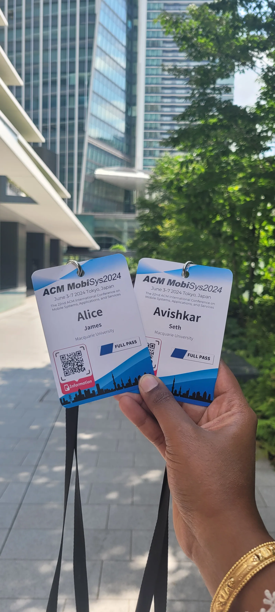
    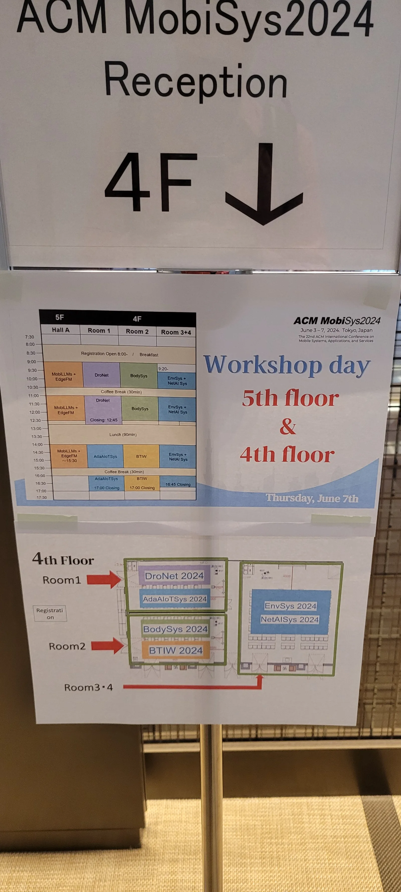
    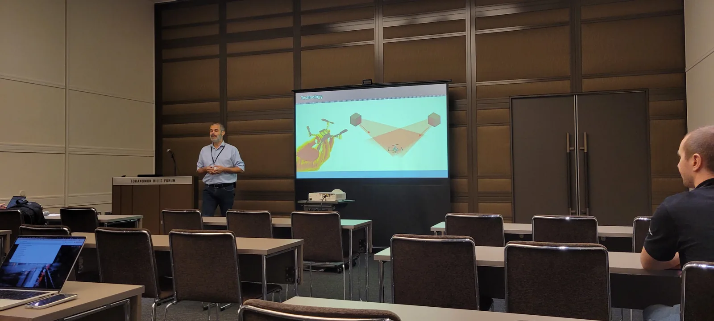
    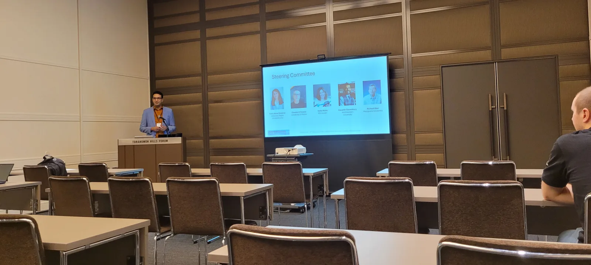
    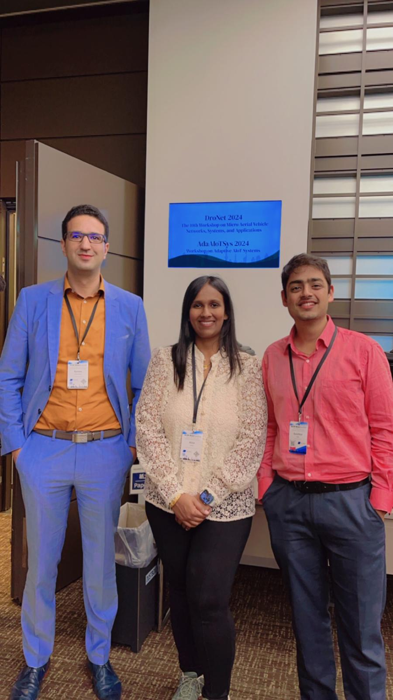
    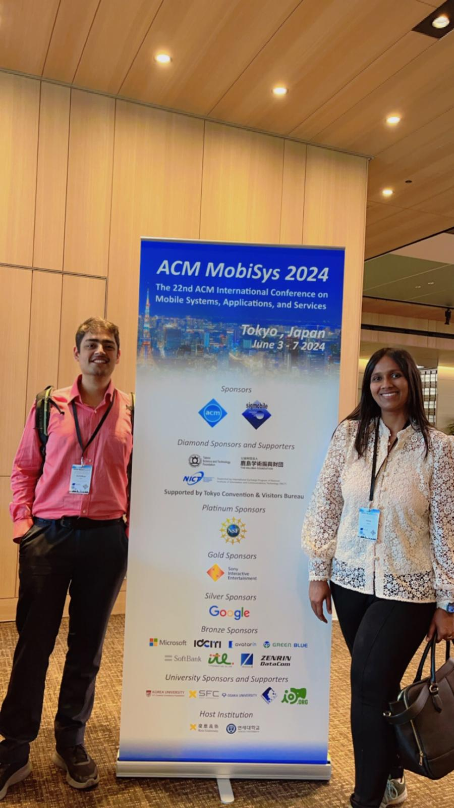
    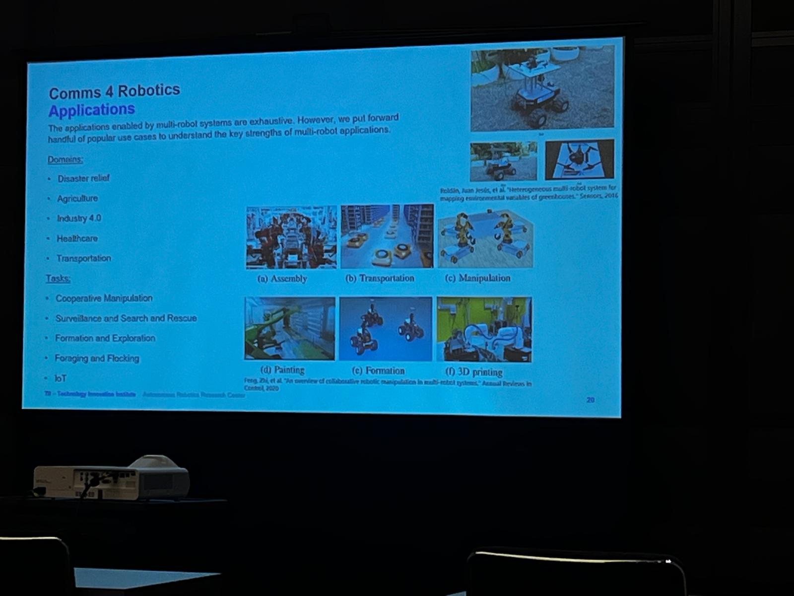
    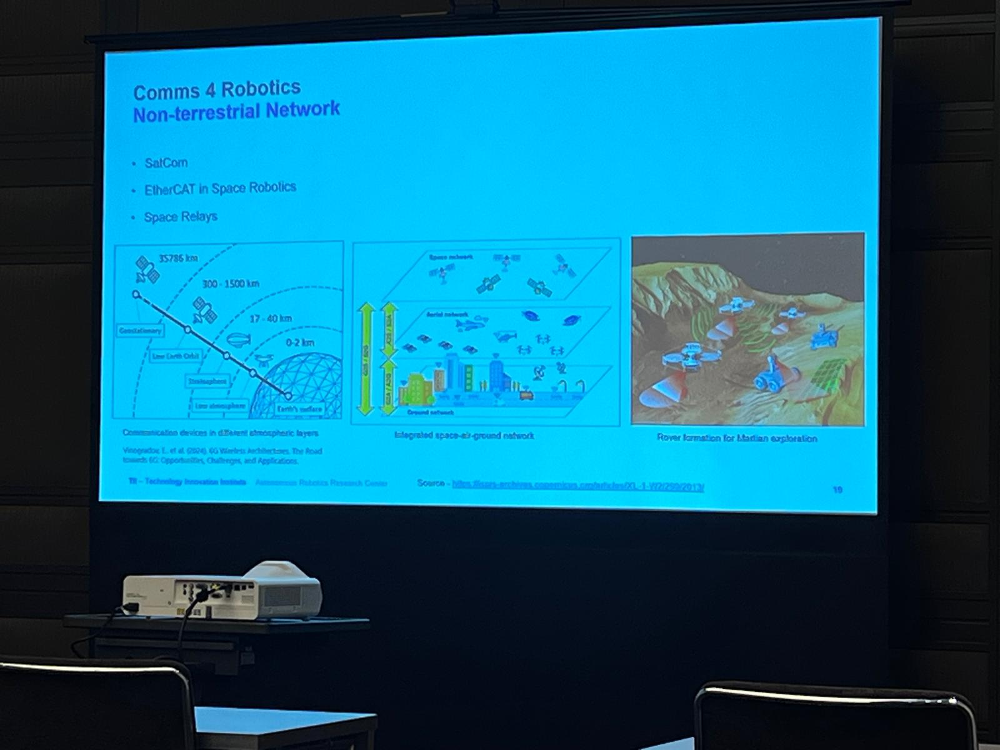
    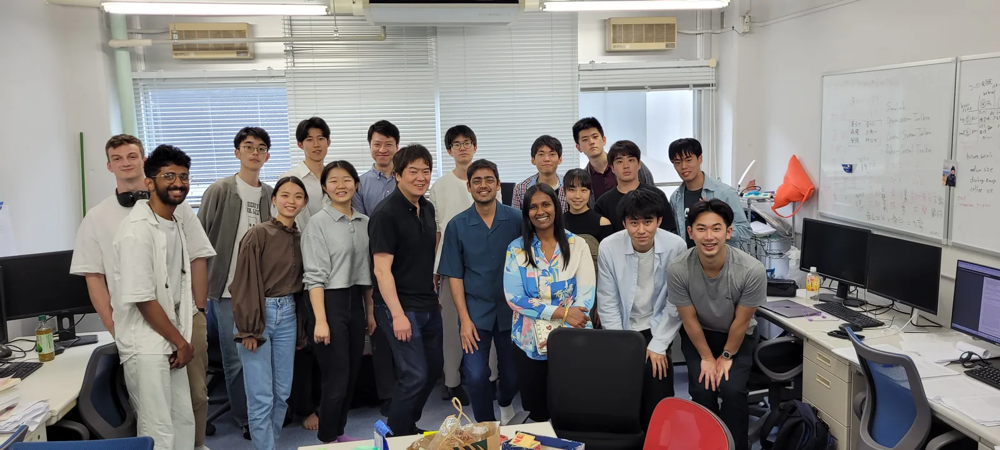
    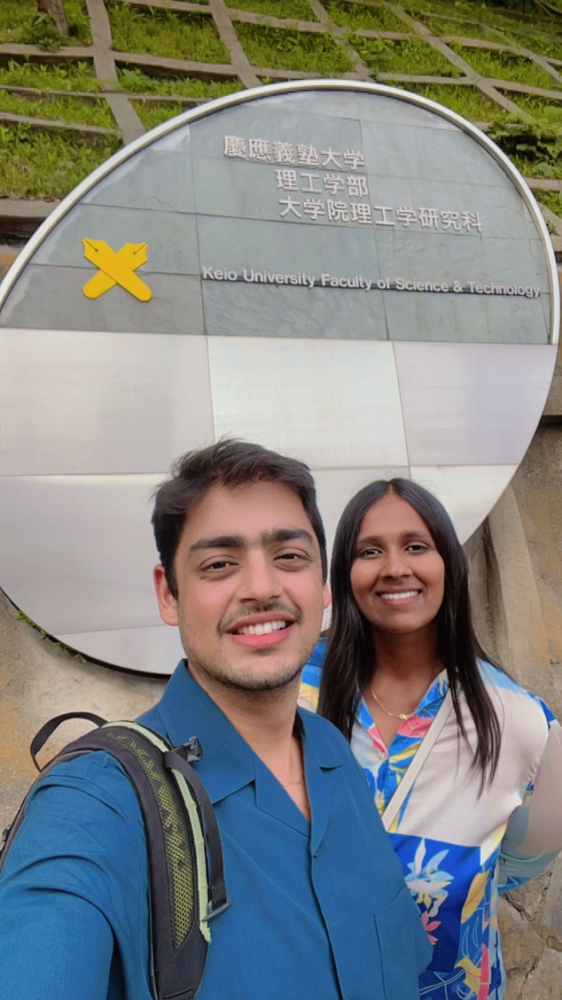
    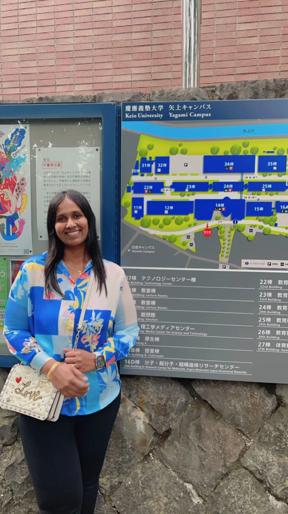
    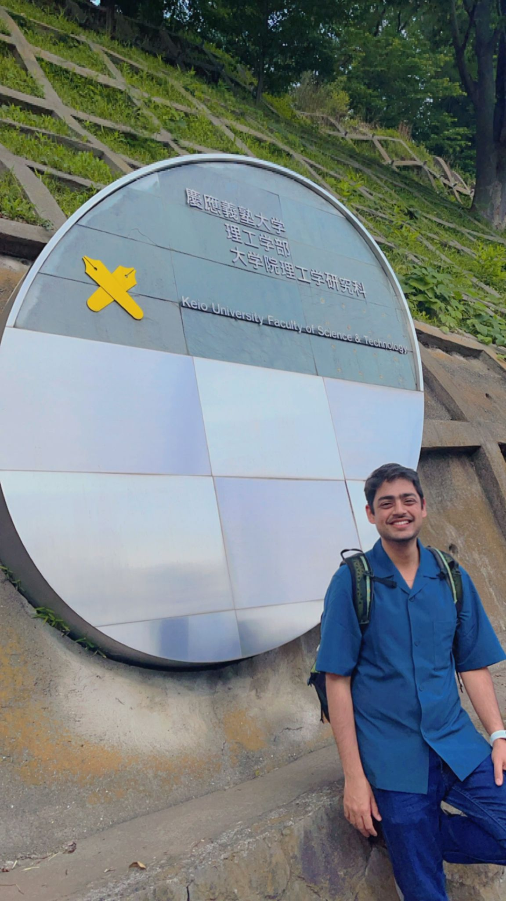
    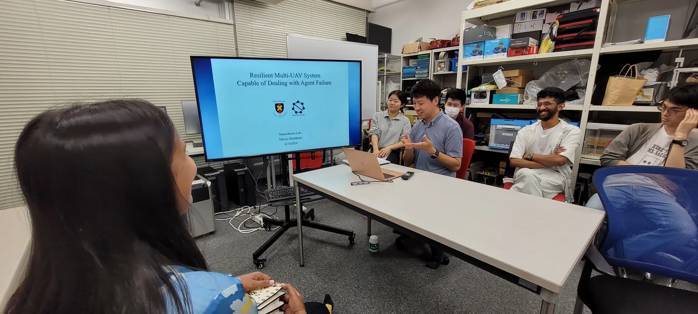
    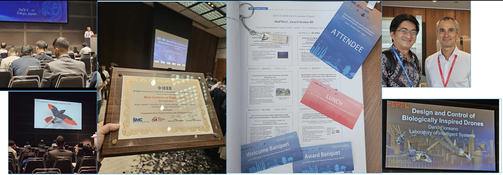

  </b>  
            
</ol>
</div></div></div></div>

 
    </section><!-- End Services Section -->
  
  
